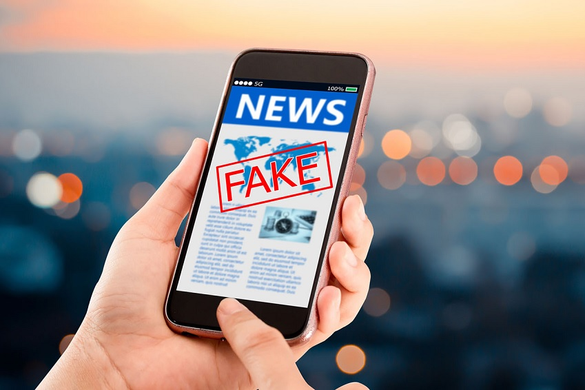

Os crimes cibernéticos no Brasil cresceram em tempos de pandemia. Em 2020, o registro de denúncias anônimas contabilizou 156.692 casos, segundo os dados da Central Nacional de Denúncias de Crimes Cibernéticos. Crimes desse tipo são reconhecidos pela legislação brasileira desde 2012, e podem render até oito anos de reclusão para quem for julgado como cibercriminoso.
Além de invasões de computadores, interceptação de dados e disseminação de malwares, ações como posse e produção de pornografia infantil, e divulgação de discurso de ódio pela Internet também são caracterizados como crimes. Entenda, a seguir, o que significa crimes cibernéticos, como a legislação brasileira funciona e quais são os casos mais realizados no Brasil.

Discurso de ódio é toda fala ou postagem que ataca negativamente a reputação de grupos vulnerabilizados como explica o pesquisador João Pedro Favaretto Salvador
"É um discurso que diz que certos grupos fizeram alguma coisa ou que são problemáticos por alguma razão, com o objetivo de fazer com que eles sejam tratados de forma diferente, sejam privados de recursos ou de oportunidades, sejam discriminados e até alvos de atos violentos", completa.
Ele conta que é possível dizer que existem três aspectos principais que denotam o discurso de ódio. O primeiro é justamente expressar essa avaliação negativa sobre um grupo ou uma pessoa que faça parte desse grupo. O segundo ponto é para quem esse discurso é direcionado. "É sempre um grupo vulnerável, com uma reputação social vulnerável e que são facilmente desacreditados."
Já o terceiro diz respeito à intenção desse tipo de fala, que tem o intuito claro de criar situações de discriminação e violência em relação a essas pessoas. "O ponto aqui é que o discurso de ódio tenta promover o ódio contra o grupo, mudar a opinião pública contra ele, sempre para pior. E, às vezes, não é necessário um insulto ou incitação direta, pode ser também a negação de um fato histórico - é você falar que o Holocausto não aconteceu, por exemplo", diz.
Com a popularização e acesso facilitado aos meios de comunicação, o conceito de fake news ganhou forma. Empregado às notícias fraudulentas que circulam nas mídias sociais e na Internet, o conceito é aplicado principalmente aos portais de comunicação online, como redes sociais, sites e blogs, que são plataformas de fácil acesso e, portanto, mais propícias à propagação de notícias falsas, visto que qualquer cidadão tem autonomia para publicar.
Em 2018, o Instituto Mundial de Pesquisa (IPSO) divulgou um estudo intitulado: “Fake news, filter bubbles, post-truth and trust (Notícias falsas, filtro de bolhas, pós-verdade e verdade)”, que revela dados importantes. De acordo com o levantamento, 62% dos entrevistados do Brasil admitiram ter acreditado em notícias falsas, valor acima da média mundial que é de 48%. Um outro estudo, consultado em junho de 2020, sobre o Relatório de Notícias Digitais do Instituto Reuters (Reuters Institute Digital News Report), mostrou que o WhatsApp é uma das principais redes sociais de discussão e troca de notícias no país, perdendo apenas para o Facebook. O levantamento apontou que 48% dos brasileiros que participaram da pesquisa usam o aplicativo como fonte de notícias, número bem superior comparado ao índice de países como: Austrália (8%), Reino Unido (7%), Canadá (6%) e Estados Unidos (4%).
As fake news crescem conforme o número de compartilhamentos, então é necessário repassar somente informações verídicas e sempre se questionar caso veja uma manchete duvidosa. Notícias falsas espalham-se rapidamente e apelam para o emocional do leitor/espectador, chamando atenção com títulos sensacionalistas e causando o consumo do material “noticioso” sem a confirmação da veracidade de seu conteúdo.
O cancelamento não é uma novidade dentro da sociedade. Desde os tempos remotos, julgar e condenar alguém, por alguma atitude considerada equivocada, acontecia “normalmente”. Assim, ganhou nomes diferentes no decorrer dos séculos, mas nunca perdeu sua essência de massacrar e apontar o dedo aos erros de outro.
Atualmente, com o advento da internet, isso ficou muito mais fácil e visível diante da possibilidade de manter o anonimato enquanto o internauta profere qualquer tipo de ofensa.